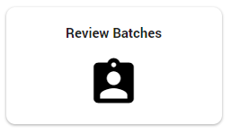
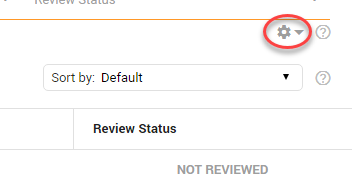
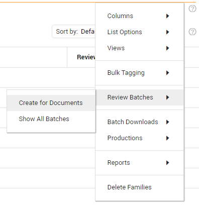
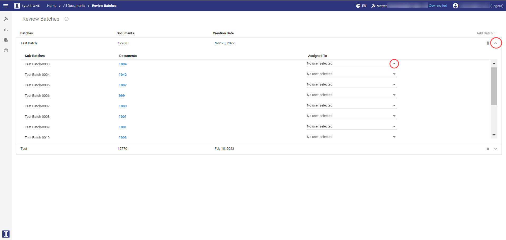
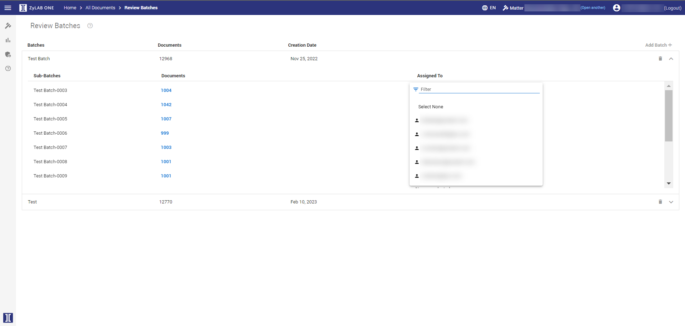
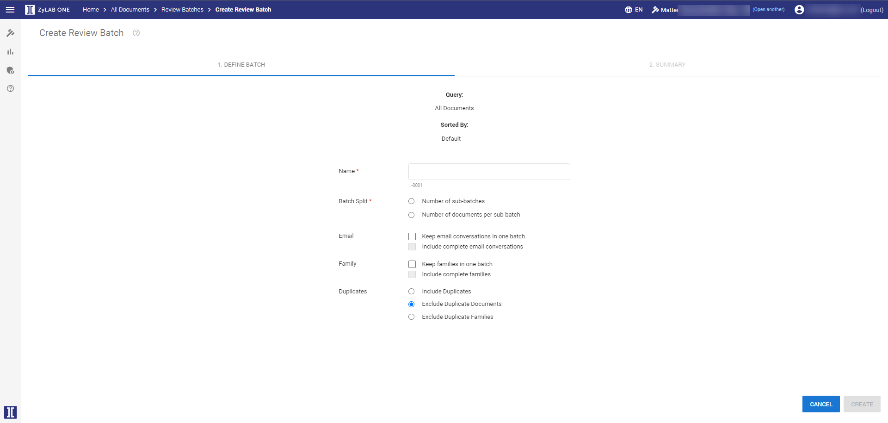
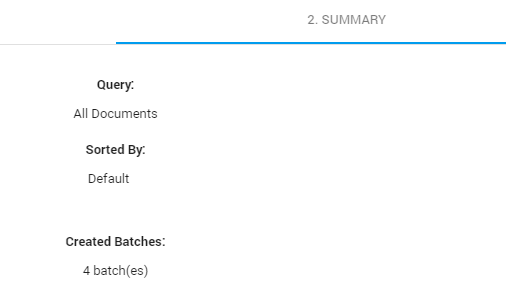
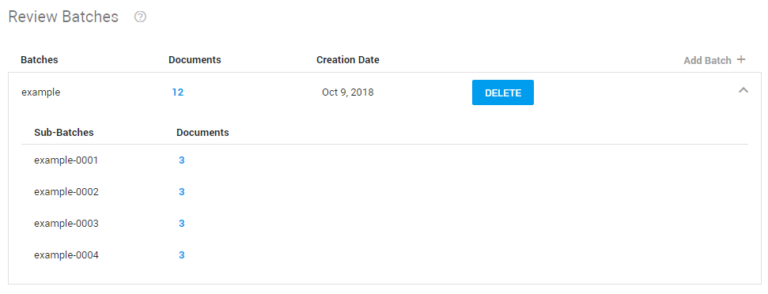

Tip: Sort the Document List. For example, sort on tags or fields.
When splitting the batch into sub-batches, this sorting order is used.
Review batches are workloads for reviewers. They are created based on the (selected) documents in the Document List (result set).
|
|
Tip: Sort the Document List. For example, sort on tags or fields.
|
On the Home page, select Review Batches to view all created Review Batches.

Create Review Batches in the Document List via the Settings icon.

Select Review Batches.

For an overview of all created batches, click Show All Batches. There, on the Review Batches page, you can delete previously created batches and select Add Batch to create a new one. Also, you can assign Review Batches to users.


To immediately create a new Review Batch, select Create for Documents/Selection. Batches are created based on the (selected and/or sorted) documents in the Document List (result set).

Define a Name for the Batch.
Select a method to split your batch into sub-batches:
Number of sub-batches For example, 8 sub-batches for 8 reviewers.
Number of documents per sub-batch For example, a maximum of 500 documents per reviewer.
Define how email messages should be handled:
Keep email conversations in one batch
Items with hits and belonging to one conversation are combined in one of the sub-batches.
Include complete email conversations
Items with and without hits (not part of the Document List) and belonging to one conversation are combined in one of the sub-batches.
Define how items from a family should be handled:
Keep families in one batch Items with hits and belonging to one document family are combined in one of the sub-batches.
Include complete families, items with and without hits (not part of the Document List) and belonging to one document family are combined in one of the sub-batches.
Define how duplicates should be handled:
Include Duplicates.
Exclude Duplicate Documents.
Exclude Duplicate Families.
Click Create. A summary is shown.

Click Done.This will show you an overview or all created batches. Also, you can click Add Batch to create a new one.
